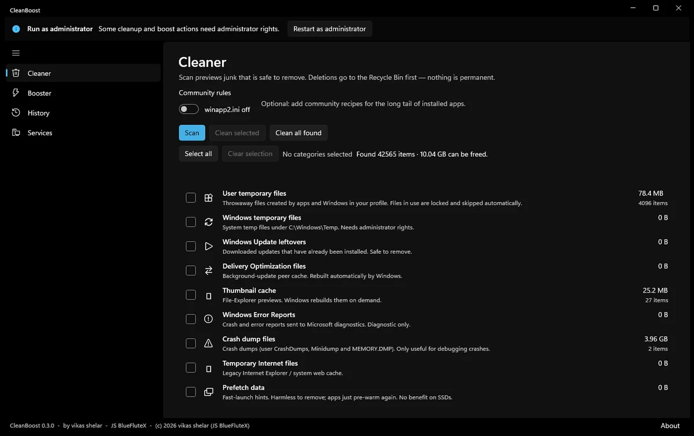

Android
Native Kotlin and cross-platform apps built for real device matrices, not emulators.
KotlinJetpackFlutter
Software studio · Pune, India
BlueFluteX designs and engineers software for teams who care how it feels — and how it still holds up two years later. Mobile, desktop, and the systems underneath them.
What we believe
We don’t ship templates. We ship systems — architected to be read by the next person, extended by the next team, and still standing years later.
Code should explain itself to a stranger. If it needs a comment to be understood, it needs a rewrite.
Budget, deadline and legacy shape the answer. We design inside them rather than around them.
Documentation, tests and a deploy pipeline are deliverables — not a favour we add if asked.
What we build
Native Kotlin and cross-platform apps built for real device matrices, not emulators.
KotlinJetpackFlutter
Swift and SwiftUI apps that respect platform conventions instead of fighting them.
SwiftSwiftUIXcode
Cross-platform desktop software that starts fast and stays responsive under load.
Tauri.NETElectron
Playable work across mobile, PC and console — scoped so the fun arrives before the budget runs out.
UnityUnrealGodot
Retrieval, inference and analytics wired into products — with the evaluation harness that keeps it honest.
LLM appsRAGPython
Second opinions on the systems you already own — code review, risk assessment, migration plans.
ReviewMigrationStrategy
Selected work
We’d rather show one finished thing than five mockups. This one is public, open source, and still in active use.
A one-click Windows cleaner where the hard part wasn’t the cleaning — it was making every deletion reversible and visible. Every removal routes through the Recycle Bin, and the interface reports the outcome of each individual file while the run is in progress.
Built around a single deletion funnel, so the path guard, symlink refusal and audit logging cannot be bypassed by accident.

How we work
We start from the problem and the constraints, not the feature list you were handed.
Data model, module boundaries and failure modes settled before anyone opens a design file.
Weekly builds you can click on, with the trade-offs written down rather than presented.
Tests, docs and a deploy pipeline, so your team owns the system and we are not a dependency.
The studio
A flute makes sound from tuned air. Software makes results from tuned systems — and it is just as easy to play out of tune. The name is a reminder that precision and restraint are what make the result sing.
We are a small team in Pune, India. We take a deliberately small number of engagements so the people you meet are the people who build it.
Get in touch
A paragraph is plenty. What it does, who it’s for, and when it needs to exist. We reply within two working days.